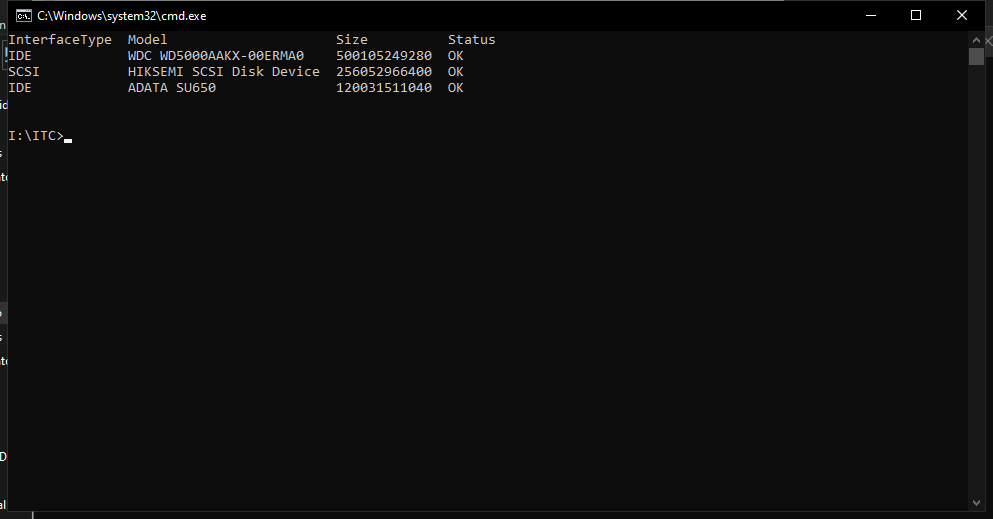
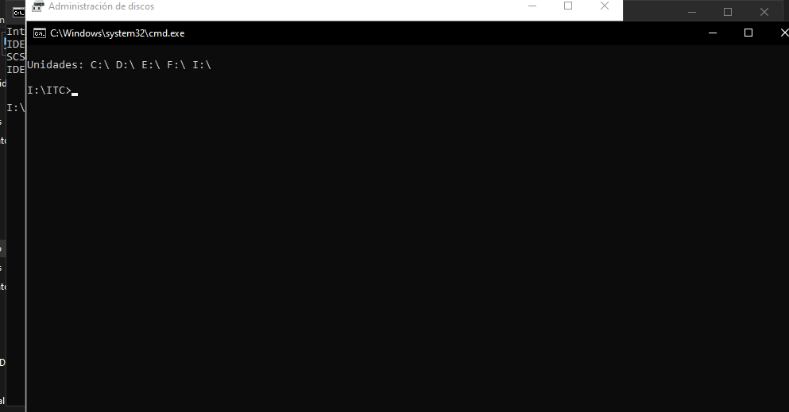
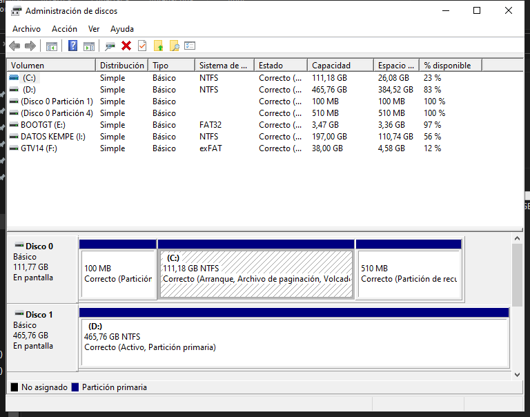
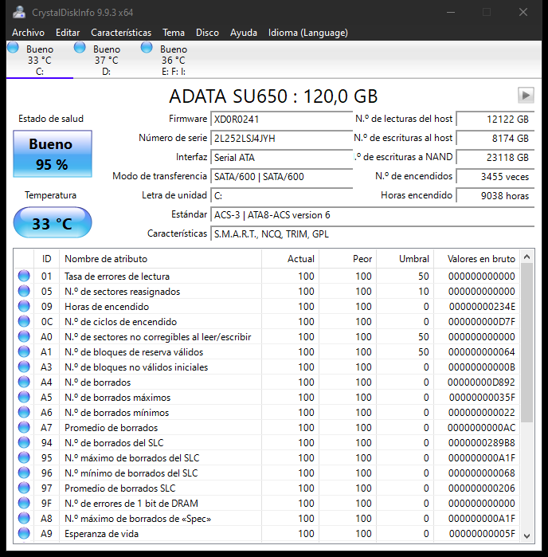

Abajo esta el inventario y la salud de los discos de la PC del aula resuelta con capturas reales: CMD con wmic, CMD con fsutil, Administración de discos y CrystalDiskInfo. Cada captura trae arriba lo que se hizo y abajo los términos traducidos; al final, la conclusión de ejemplo.

wmic diskdrive get model,size,status,interfacetypeSe abrió CMD y se ejecutó el comando pedido. Resultado: tres discos físicos, todos con estado OK: WDC WD5000AAKX (500 GB, IDE), HIKSEMI SCSI Disk Device (256 GB, SCSI) y ADATA SU650 (120 GB, IDE). Los tamaños están en bytes: 500105249280 / 256052966400 / 120031511040 (se dividen entre 1024 tres veces para verlos en GB).
Datos clave de la captura:
| Término | Significado |
|---|---|
| InterfaceType: IDE / SCSI | Cómo se conecta el disco a la placa (bus) |
| Size 500105249280 | Capacidad en bytes; 500105249280 / 1024 / 1024 / 1024 ≈ 465 GB |
| Status: OK | El disco informa estado sano a nivel básico |
| wmic diskdrive get ... | Pedir propiedades de los discos físicos al sistema |

fsutil fsinfo drivesSegundo comando: lista las unidades lóginas presentes: C:\ D:\ E:\ F:\ I:\. Las particiones (C: y D:) màs las unidades extraíbles conectadas al momento (E:, F:, I:). Es la lista rápidad de "qué letras hay montadas"; el detalle de cada una, en el paso siguiente.
Datos clave de la captura:
| Término | Significado |
|---|---|
| fsutil fsinfo drives | Informe de unidades lóginas/directorios montados |
| C:\ D:\ | Particiones internas del disco (SSD y mecánico) |
| E:\ F:\ I:\ | Pendrive y discos externos USB conectados |

Se ejecutó diskmgmt.msc. Arriba, la tabla de volúmenes: C: 111,18 GB NTFS (23% libre), D: 465,76 GB NTFS (83% libre), una partición de 100 MB (sistema) y una de 510 MB (recuperación) del Disco 0, el pendrive BOOTGT (E:) en FAT32, DATOS KEMPE (I:) NTFS y GTV14 (F:) en exFAT. Abajo, el mapa físico: Disco 0 = 111,77 GB con sus 4 particiones y Disco 1 = 465,76 GB con D:. O sea: al SSD entramos (particiones del sistema), y D: ocupa todo el disco mecánico.
Datos clave de la captura:
| Término | Significado |
|---|---|
| Basic / Simple | Disco básico con volumen simple (sin RAID ni dinámicos) |
| NTFS / FAT32 / exFAT | Sistemas de archivos: NTFS para Windows, FAT32/exFAT para extraíbles |
| 100 MB / 510 MB | Partición de sistema (arranque UEFI) y de recuperación |
| Correcto (...) | Estado del volumen: sin errores detectados |

Ficha C: (el SSD ADATA SU650): Estado de salud: Bueno 95%, 33 °C, 9038 horas encendido (equivale a más de un año de uso), 3455 encendidos y, en la tabla SMART, el atributo 05 "N.º de sectores reasignados": Actual 100, Umbral 10 (en crudo 0: ningún sector reasignado). Todos los atributos actuales por encima de su umbral: disco sano.
Datos clave de la captura:
| Término | Significado |
|---|---|
| Estado de salud: Bueno 95% | Veredicto del SMART del disco |
| 05 Sectores reasignados: 100 / 10 | Valor actual vs umbral; en "valores en bruto" 0 sectores malos |
| Horas encendido 9038 | Tiempo total con el disco girando/recibiendo pedidos |
| Temperatura 33 °C | Bajo el límite de seguridad (<40 °C ideal SSD) |